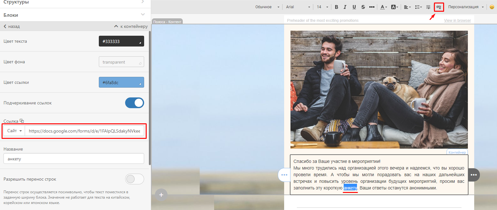
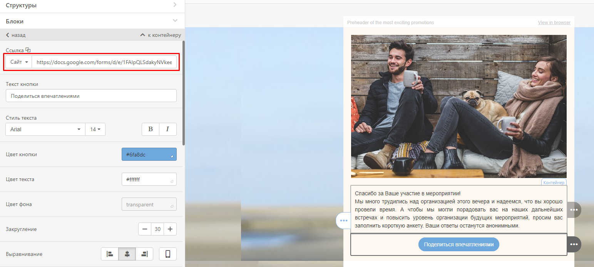
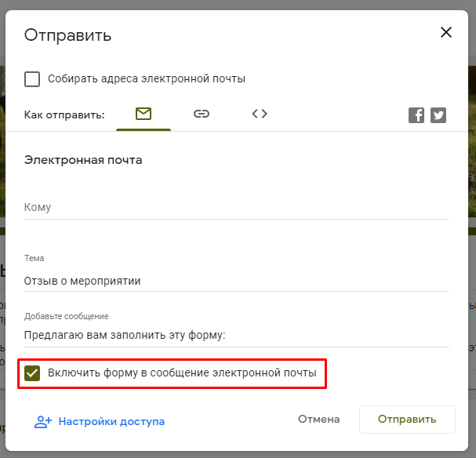
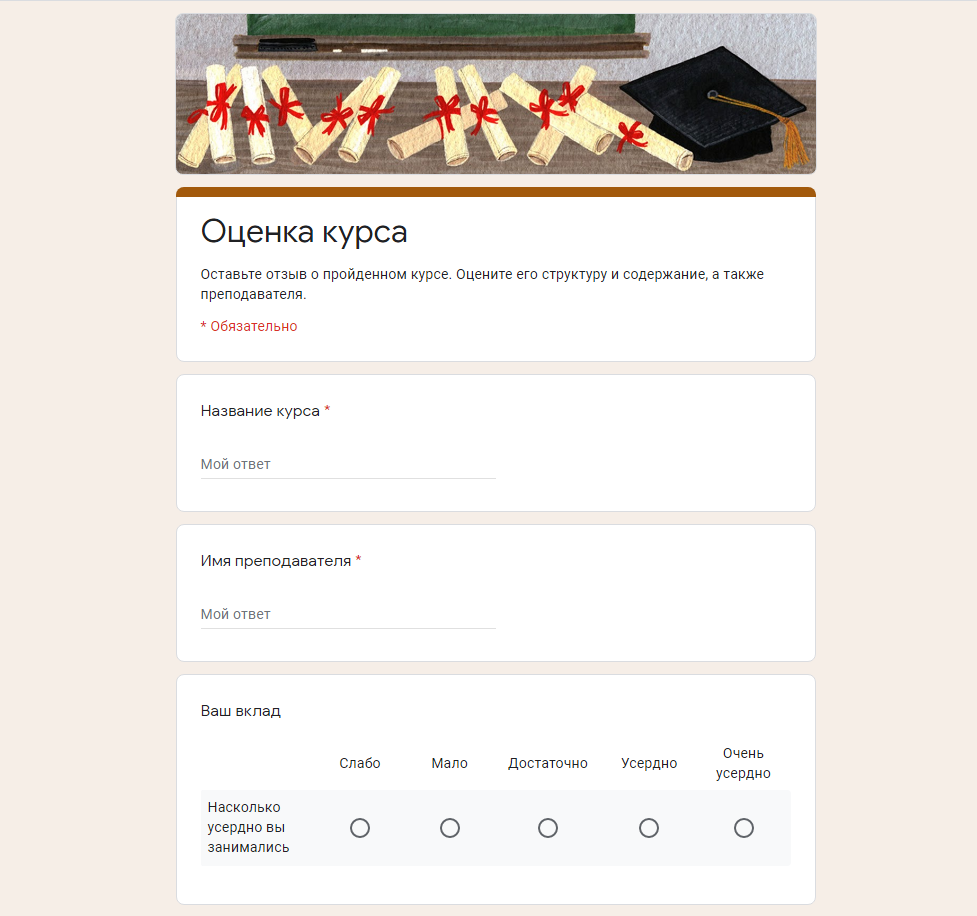
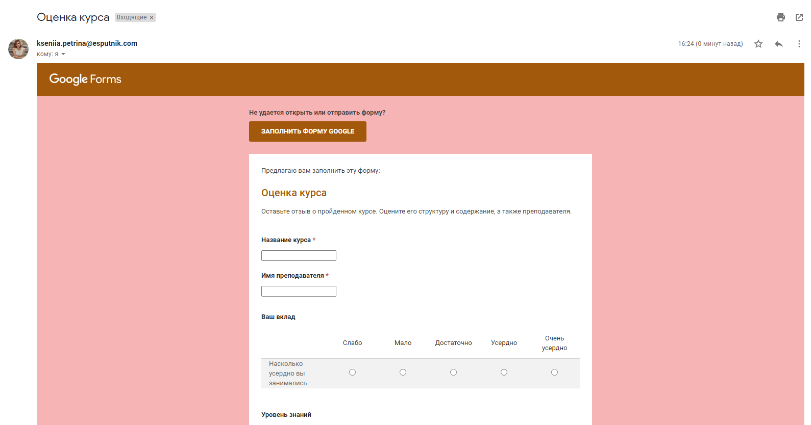
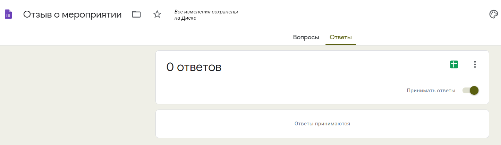
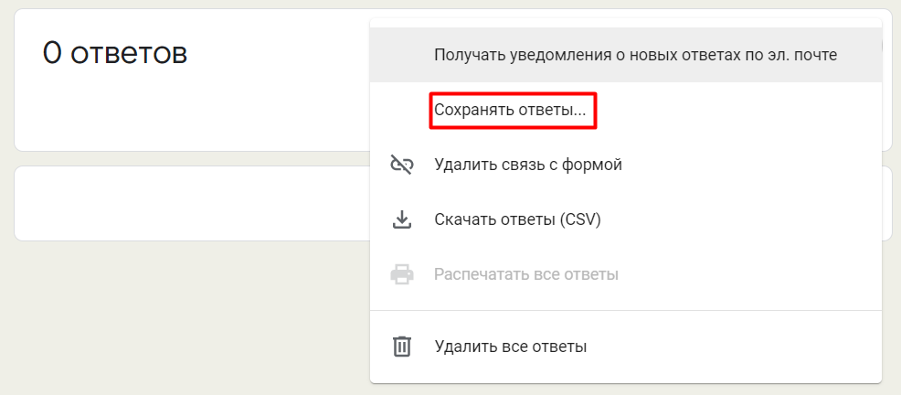

Добавляем форму в письмо
Ссылка в тексте
Выделите курсором часть текста, кликнув по которой пользователь перейдет к опросу. На панели инструментов выберите значок “Сделать ссылкой”. Слева появится меню, в котором можно вставить URL формы, а также выбрать цвет для ссылки, чтобы визуально выделить ее в тексте.
Кнопка CTA
Можно акцентировать больше внимания на ссылке, оформив ее в виде кнопки СТА. Для этого выберите в редакторе сообщения слева вкладку “Контент” → “Блоки” → “Кнопка”, перетащите в нужное место в письме, а в появившемся меню настройте внешний вид и добавьте адрес формы.
Вы можете предположить, что получатели письма могут полениться переходить по ссылке и было бы здорово иметь возможность заполнить опрос в самом письме. И сам сервис Google Forms, вроде, предлагает такой способ, но при этом очень сковывает в других действиях с электронным письмом: вы можете только указать тему и добавить сопроводительный текст:
Отметим, что гугл-формы в электронном письме не адаптивны и могут по-разному отображаться в зависимости от почтового сервиса и устройства пользователя. Поэтому получатель может не увидеть опрос таким, как вам бы хотелось.
Для сравнения: так выглядит ваш опрос, когда респондент переходит по ссылке:
а так, когда он получает Google Форму в электронном письме:
Анализ результатов опроса
Ответы в Google Forms
После того, как вы отправили форму респондентам, полученные результаты Google Forms по умолчанию сохранит во вкладке “Ответы” на странице формы.
Респонденты смогут отправлять форму до тех пор, пока ползунок “Принимать ответы” будет установлен в соответствующее положение.
Здесь в режиме реального времени доступен просмотр индивидуальных ответов каждого респондента, сводка по каждому вопросу, общая статистика по ответам. Это отлично подходит для быстрой оценки результатов опроса, но для более детального анализа ответов вы можете связать свою форму с электронной таблицей Google Sheets. Для этого щелкните по зеленой иконке "Таблицы" или нажмите "Сохранять ответы" в меню с тремя вертикальными точками, затем создайте новую электронную таблицу или выберите существующую, чтобы сохранить ответы. Созданную таблицу в дальнейшем вы сможете скачать в формате .csv.
Одно из преимуществ Google Forms – сервис всегда хранит полную копию всех данных вашей формы. Поэтому даже если вы случайно что-то удалили из своей таблицы, можно не беспокоиться о потере данных. Для такого случая в сервисе предусмотрена функция “Удалить связь с формой”. Прервите связь с таблицей, а затем снова восстановите ее – и все данные вашей формы добавятся обратно на новый лист.
В “Ответах” предусмотрена еще одна удобная функция – уведомления. Нажмите в меню галочку “Получать уведомления о новых ответах по эл. почте” и Google Forms по умолчанию будет отправлять вам электронное письмо при каждом заполнении формы. Установить дополнительные параметры уведомлений можно, нажав в таблице Инструменты → Настроить уведомления.
Если возможностей Google Forms вам недостаточно для работы, вы можете воспользоваться дополнениями, которые добавят новые функцие для настройки уведомлений, анализа результатов, автоматического закрытия формы на прием новых ответов и т.д.
Как мы с вами убедились, Google Формы - это простой в обращении, но крайне полезный инструмент для сбора обратной связи и создания опросов. Теперь же в случае возникновения необходимости вы без труда сможете создать гугл форму, наполнить её нужными вам элементами и отправить участникам опроса